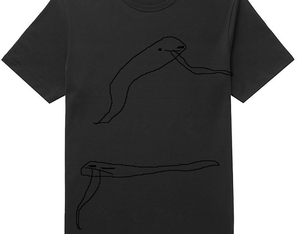

|  |
|---|
| RSE-030 |
RSE-030 is a black shirt, with a design featuring two serpents seemingly circling around one another, in an animated fashion. The origin of the shirt is unknown, in both its location and who designed it to begin with. The anomalous properties of this shirt begin when viewed by a subject. Said subject will be lured towards the shirt in an attempt to put it on. Once worn, the subject will suffer some form of heart attack, whether it be a straight heart attack or going into cardiac arrest. It is unknown how many have fallen victim to the shirt itself, but ever since the shirt was obtained by the RSE Foundation, there has been 34 recorded incidents.
RSE-030 is to be kept in its own containment chamber in Sector 01 of Facility 01. The shirt is located within a briefcase with padding on the outside, to prevent any chance of unforeseen anomalous effects.